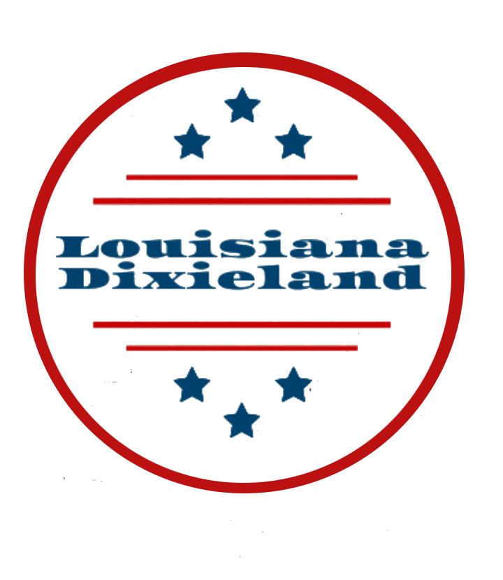
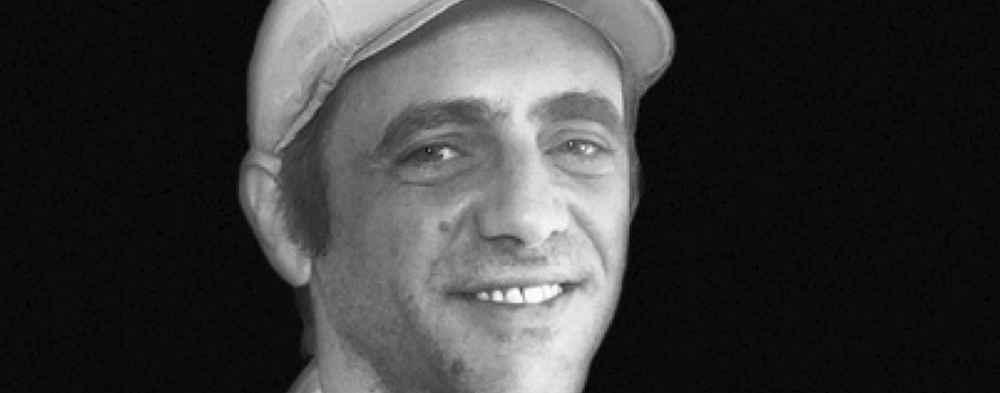

Trompeta

Hot Jazz · Nueva Orleans · Second Line
Louisiana Dixieland no solo basa su repertorio en la música tradicional de Nueva Orleans sino que incorpora temas actuales adaptados al jazz de los años 20, como es el estilo Second Line creando así espectáculos únicos e irrepetibles.
El origen
El término «Dixieland» se utilizaba para referirse coloquialmente a los estados confederados de América y surgió a raíz de los billetes de diez dólares impresos por un banco de Nueva Orleans que incluían la palabra «Dix» — diez en francés.
Dixieland era pues la tierra del «Dixie» y hacía referencia a la región de donde provenía el billete: Louisiana.
Pronto su música adoptaría este nombre y se convertiría en un popular estilo de música callejera, herencia de las bandas militares que desfilaban interpretando ritmos asincopados e improvisaciones.
Sobre nosotros
Louisiana Dixieland es una formación jazzística compuesta principalmente por cinco instrumentos y seis componentes: percusión, tuba, trombón, trompeta y saxofón. Nace de las inquietudes de un grupo de amigos por promover las raíces de la música callejera americana del siglo XX.
A través de este estilo «hot jazz» con sus ritmos e improvisaciones, creamos espectáculos que van desde desfiles y pasacalles hasta conciertos y eventos festivos. No solo basamos nuestro repertorio en la música tradicional de Nueva Orleans: incorporamos temas actuales adaptados al jazz de los años 20, como es el estilo Second Line, creando así espectáculos únicos e irrepetibles.
Repertorio
Trompeta
Trombón
Percusión
Saxo
Tuba

Percusión
Contratación
Bodas, ferias, festivales, pasacalles… Nos adaptamos a cualquier formato donde el dixieland tenga algo que decir.